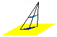

O que é Projeção?
A projeção de um objeto é sua REPRESENTAÇÃO GRÁFICA num plano.
Como os objetos têm três dimensões, sua representação num plano bidimensional se dá em conformidade com artifícios técnicos, para tanto, são considerados os elementos básicos da projeção.
A PROJETANTE
A projetante é a reta que passa pelos pontos do objeto e intercepta o plano de projeção. Pode ser oblíqua ou ortogonal ao plano de projeção, dependendo da direção adotada.
CENTRO DE PROJEÇÃO
É o ponto fixo de onde partem ou por onde passam as projetantes. A PROJETANTE INTERSECTA O PLANO DE PROJEÇÃO. Os sistemas de projeções são classificados de acordo com a posição ocupada pelo centro de projeção
Quando um ponto se projeta
Imagine um objeto suspenso, por fios invisíveis, sendo iluminado por uma lanterna em frente a uma parede branca, a sombra deste objeto na parede é a projeção do objeto, os raios de luz da lanterna são os raios projetantes , a lanterna que emite os raios luminosos é o centro de projeção de onde partem os raios projetantes e a parede é o plano de projeção. O centro de projeção, neste caso, está a uma distância finita do objeto e as projetantes são convergentes, a projeção é classificada como PROJEÇÃO CÔNICA, ou SISTEMA CÔNICO DE PROJEÇÃO. Saiba Mais!
Agora, imagine o mesmo objeto ao sol, a sombra que este objeto faz sobre uma superfície lisa, uma calçada por exemplo, é a projeção do objeto, e os raios solares, são os raios projetantes. O centro de onde os raios partem é o sol, mas ele está tão distante da terra que os raios emitidos podem ser considerados paralelos, podemos dizer, que o centro de projeção dos raios, neste caso, está a uma distância infinita do objeto e a projeção é classificada como PROJEÇÃO CILÍNDRICA ou SISTEMA CILÍNDRICO DE PROJEÇÃO. Saiba Mais!
Pelos exemplos, podemos concluir que os sistemas de projeções são classificados de acordo com a posição ocupada pelo CENTRO DE PROJEÇÃO. Esse centro pode ser finito, ou infinito, determinando: SISTEMA CÔNICO , também chamado de Sistema Central e o SISTEMA CILÍNDRICO .
Créditos de desenvolvimento do conteúdo
Profª Dra. Vânia C. P. N. Valente - Universidade Estadual Paulista - UNESP/Bauru
Profª. Dra. Maria Antonia Benutti Giunta - Universidade Estadual Paulista - UNESP/Bauru
Créditos da codificação do sítio
Prof. Me. Adriano Bezerra - Faculdade de tecnologia de Lins
André Domingues - Discente do curso de Sistemas para Internet da Fatec Lins